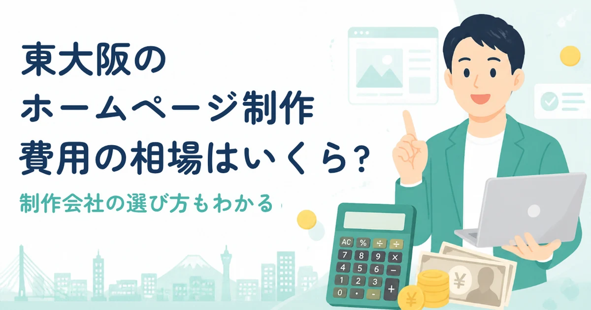
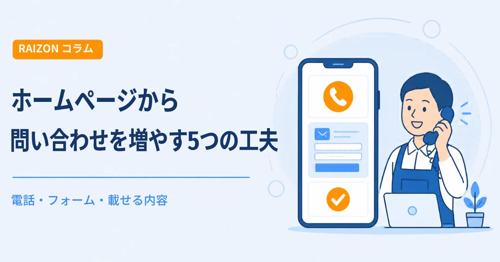
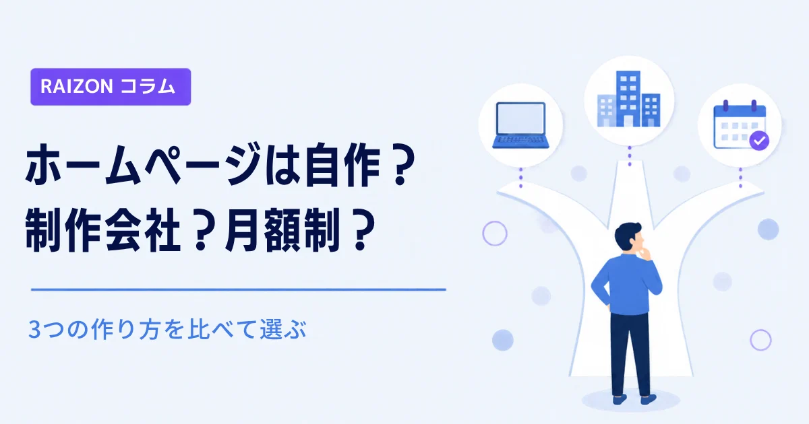
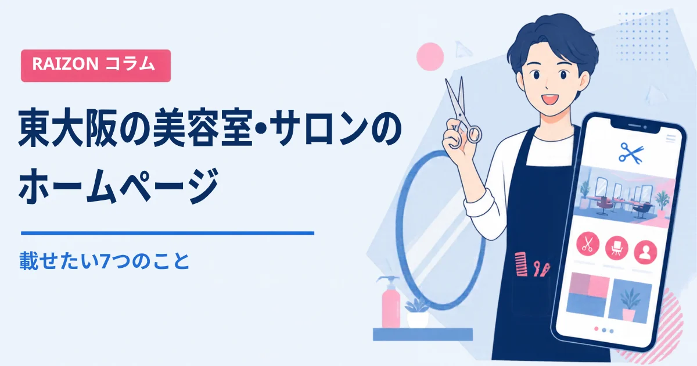

東大阪のホームページ作成・制作の費用相場は？買い切り・月額の違いと見積もりの見方

東大阪でホームページを作りたいと思っても、「いくらかかるのか」が分からず、動き出せない方は少なくありません。制作会社によって見積もりの出し方がばらばらで、比べにくいことも原因です。この記事では、費用の目安と、見積もりで確認したいポイントを整理します。
- 費用は「最初に払う制作費」と「毎月かかる費用」の2つに分けて考える
- 買い切りは初期費用が大きく、月額制は初期費用が小さい代わりに毎月かかる
- 見積もりでは、サーバー・ドメイン・更新費が含まれているかを必ず確認する
先に結論です。東大阪でホームページ作成を頼む場合、買い切りなら初期費用が数十万円になることが多く、月額制なら初期費用は0円〜数万円で、そのかわり毎月の費用がかかります。大切なのは、金額の大きさよりも、「何が含まれているか」です。
費用は「初期費用」と「毎月の費用」で考える
ホームページの費用は、大きく2つに分かれます。ひとつは、作るときに払う「制作費」。もうひとつは、公開したあとにかかる「サーバー代・ドメイン代・更新費」などです。制作費だけを見て安いと思っても、毎月の費用が高いと、数年でかなりの差になります。
買い切りと月額制の費用の目安
| タイプ | 最初に払う費用 | 毎月・毎年の費用 | 向いている人 |
|---|---|---|---|
| 買い切り型 | 数十万円になることが多い | サーバー代・ドメイン代など（更新は別料金のことも） | 最初にまとまった予算があり、内容をあまり変えない人 |
| 月額制（サブスク） | 0円〜数万円 | 月額の利用料（更新込みのことも） | 初期費用を抑えたい人、公開後も相談したい人 |
| 自分で作る | ほぼ0円 | ツールの利用料（月1,000円前後〜） | 時間があり、作ることが苦にならない人 |
金額は、ページ数や機能によって大きく変わります。表はあくまで考え方の目安なので、必ず複数の会社で見積もりをとって比べてください。
見積もりで確認したい6つの項目
- ページ数：トップだけか、会社概要・料金・お問い合わせまで含むのか。
- サーバー・ドメイン代：制作費に含まれているか、別なのか。
- 公開後の更新・修正：回数に上限はあるか、1回ごとに料金がかかるか。
- スマホ対応：スマートフォンでも見やすい作りになっているか。
- 解約・契約期間：最低契約期間や、やめるときの費用はあるか。
- データの扱い：やめたあと、ホームページや画像は誰のものになるか。
東大阪の事業者さんが、費用で迷いやすい場面
- 開業したばかりで予算が少ない：初期費用を抑えられる月額制が、候補になります。
- 町工場で、設備や実績を載せたい：写真の撮影や、掲載内容の整理が必要になるため、相談できる会社かを確認します。
- お店で、営業時間やメニューが変わる：更新のたびに料金がかからないかが大切です。
どのケースでも、「作ったあとに誰が更新してくれるのか」で、トータルの負担が変わります。
RAIZONの料金
RAIZONは、東大阪市の下小阪を拠点に、月額制のホームページ制作をしています。初期制作費は0円、月額9,800円（税抜）です。月4回までの修正・更新が含まれ、最低契約期間はありません。ホームページを作れば必ずお客様が増える、とは言えませんが、公開後も相談しながら、一緒に整えていきます。料金の詳細はこちら。
あわせて読みたい
よくある質問
東大阪でホームページを作る費用の相場はいくらですか？
内容によって幅がありますが、買い切り型は数十万円になることが多く、月額制は初期費用0円〜数万円と月額の利用料、という形が一般的です。必ず複数社で見積もりを比べてください。
月額制は、結局高くなりませんか？
長く使うほど総額は増えますが、更新や修正が含まれていれば、買い切りで別途かかる費用と比べられます。何年使う予定か、更新をどれくらいするかで、判断が変わります。
見積もりのあと、追加費用がかかることはありますか？
ページの追加や、機能の追加をすると、費用がかかることがあります。最初に、含まれる範囲を確認しておくと安心です。まずはお問い合わせフォームから、お気軽にご相談ください。
ほかのコラム

集客・運用ホームページから問い合わせを増やす5つの工夫｜電話・フォーム・載せる内容
ホームページを作ったのに問い合わせが少ない、という小さなお店・事業者さん向けに、問い合わせにつなげる5つの工夫を解説します。電話番号の見せ方、ボタンの置き場所、フォームの項目、料金や流れの書き方、写真での安心感を、やさしくまとめました。

制作の基礎ホームページは自作？制作会社？月額制？｜3つの作り方を比べて選ぶ
ホームページを自分で作る方法、制作会社に頼む方法、月額制のサービスに頼む方法を、費用・手間・更新のしやすさ・困ったときの相談先の4つの視点で比べます。東大阪の個人事業主さん・小さなお店向けに、選び方をやさしく解説します。

制作の基礎東大阪の美容室・サロンのホームページに載せたい7つのこと｜メニュー・予約・スタッフ
東大阪の美容室・サロンがホームページを作るとき、載せておきたい情報を7つに整理しました。メニューと料金、予約の方法、スタッフ、施術の写真、行き方、営業時間、お知らせの載せ方をやさしく解説します。